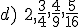
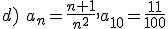

Sucesiones
· 1, 2, 3, 4, 5, … an = n, entonces a100 = 100
· 2, 4, 6, 8, 10, … an = 2n, entonces a25 = 50
· 1, 4, 9, 16, 25, … an = n2, entonces a12 = 144
· 32, 16, 8, 4, 2, … an = 26-n, entonces a10 = 2-4 = 1/16
· 1, 1, 2, 3, 5, 8, 13, … an = an-1 + an-2 a1 = a2 = 1
Esta es la sucesión de Fibonacci.
Término general an = a1 + (n-1)· d
En el ejemplo: an = 3 + (n-1)· 2 = 2n + 1
Término general: an = a1· rn-1
En el ejemplo: an = 3 · 2n-1
Ejercicio. Encuentra el término general y a10 de las siguientes sucesiones:
a) 1, 3, 9, 27, 81, ...
b) 15, 12, 9, 6, 3, 0, ...
c) 1, -2, 3, -4, 5, ...

Soluciones: a) an=3n-1, a10= 39= 19683; b) an= 18- 3n, a10=-12; c) (-1)n·n; a10= 10;

Obra publicada con Licencia Creative Commons Reconocimiento No comercial Compartir igual 4.0